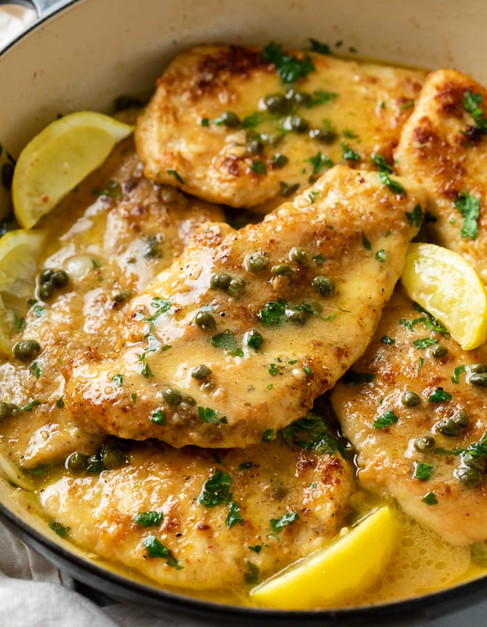

Quick Chicken Piccata

Description
These quick and easy pan-fried chicken breasts are topped with a simple pan sauce made with capers, butter, white wine, and lemon juice.
Ingredients
- 4 skinless, boneless chicken breast halves
- cayenne pepper
- salt
- ground black pepper
- all-purpose flour
- 2 tablespoons of olive oil
- 1 tablespoons capers, drained
- 1/2 cup wite wine
- 1/4 cup fresh lemon juice
- 1/4 cup water
- 2 tablespoons of fresh italian parsley, chopped
Steps
- Place chicken breasts between 2 layers of plastic wrap and pound to about 1/2-inch thick.
- Season both sides of chicken breasts with cayenne, salt, and black pepper; dredge lightly in flour and shake off any excess.
- Heat olice oil in a skillet over medium-high heat. Place chicken in the pan, reduce heat to medium, and cook until browned and cooked through, about 5minutes per side; remove to a plate.
- Cook capers in reserved oil, smashing them lightly to release brine, until warmed through, about 30 seconds
- Pour white wine into skillet. Scrape any browned bits from the bottom of the pan with a wooden spoon. Cook until reduced by half, about 2 minutes.
- Stir lemon juice, water, adn butter into the reduced wine mixture; cook and stir continuously to form a thick sauce, about 2 minutes. Reduce heat to low and stir parsley through the sauce.
- Return chicken breasts to the pan cook until heated through, 1 to 2 minutes. Serve with sauce spooned over the top.